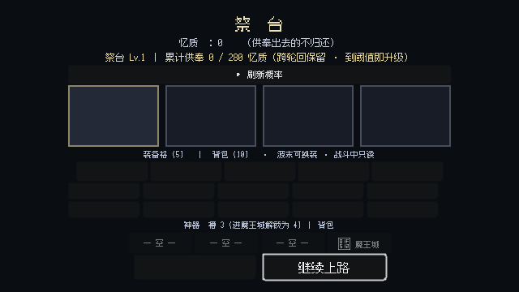

未竟之塔是一个独立的场景：每过一段路，画面会跳转进来。它不在路上，也不属于任何一区。
按世界观的表述：这是三人意识沉入「所有生灵灵魂深处」的地方，是世界记忆的锚点。 每打完一波，三人会回到这里休整。
| 项 | 规则 |
|---|---|
| 进入时机 | 每一波结束（首次为初醒原第一波末） |
| 能做什么 | 存档、祭台、刻痕、听女神说话、启程 |
| 存档 | 每波结束自动写盘，是唯一的存档点，支持跨进程续玩 |
| 名字 | 一周目中，「未竟之塔」四个字在界面上被遮蔽 |
祭台是塔里的一个入口，供奉忆质换取内容。货架四格：未竟之影（必定出现）、天命石（220）、武器（随机）。
| 项 | 规则 |
|---|---|
| 货币 | 忆质，跨关结转，花掉不退还 |
| 品级概率 | 随祭坛等级提升（Lv.2 需累计 280 忆质，约第 1 波内达成） |
| 刷新 | 付忆质再掷一次 |
| 不卖 | 神器（仅 Boss 掉落） |

塔中央的那团光球就是女神。她不是塔里的 NPC，而是世界记忆的锚点、存档机制本身： 她能回滚，不能写入 —— 所以记忆和局内装备会随轮回回滚，刻痕却能留下，因为那是玩家亲手写下的部分。
她从不称这座塔的名字，也不说任何货币的系统名，只描述现象。触碰光球，她给出选择；她的每一句话，都对应一个功能。
| 她说的话（对话选项） | 对应的功能 |
|---|---|
| 触碰光球 →「你们醒来了」 | 展开塔内入口：祭台 / 刻痕 / 启程 / 休息 |
| 「你们身上有一些痕」 | 开放刻痕系统（草原关结束，5 句引导，不展开） |
| 「往上走，能刻的地方更多」 | 确认与展开：区分草原的痕与这一层的痕（森林第一波末） |
| 「我的力量恢复了些许」 | 祭坛等级提升 → 祭台品级概率随之变化 |
| （死亡时）执行回溯 | 时间回溯到最近的存档点 —— 她就是存档机制本身 |
| 操作 | 规则 |
|---|---|
| 装上 | 背包影与装备格 1:1 交换，换下的回背包 |
| 归还 | 背包影折成魂，格子清空 |
| 卸下 | 回背包，需有空位；背包满则拒绝 |
| 升品 | 旧影自动归还折魂，不浪费 |